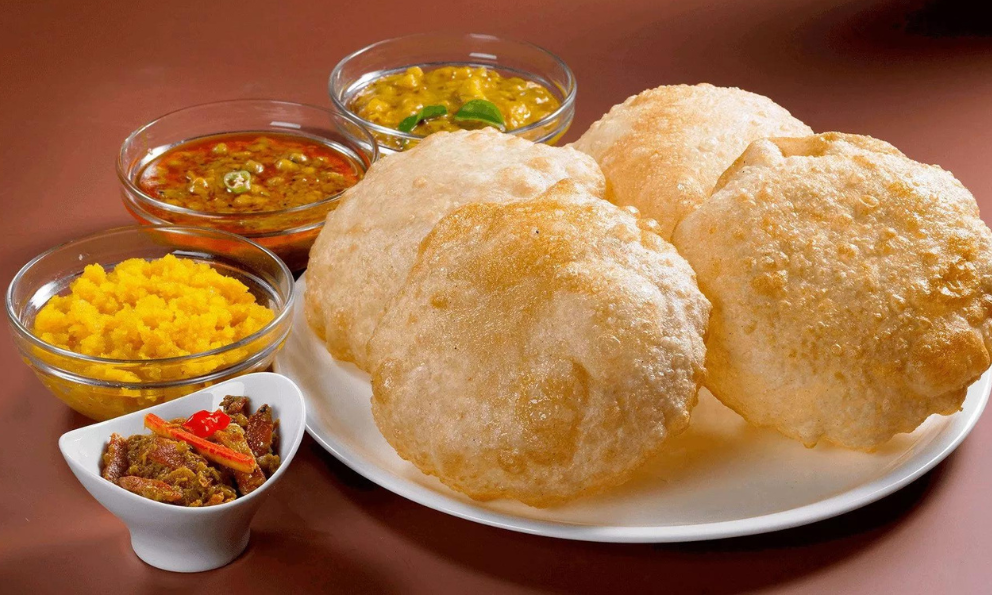

Halwa Puri

Description
Poori is a popular deep fried flatbread that’s served for breakfast across Pakistan
and India. In Pakistan poori is part of a popular weekend breakfast called Halwa Puri,
which is basically a platter of pooris served with halwa, punjabi chole masala and
aloo ki bhujia (potato curry).
Ingredients
For Puri:
- 2 cup All Purpose Flour
- 1 tbsp Oil
- ½ cup Wheat Flour
For Halwa:
- ¾ cup Oil
- 6 Green Cardamoms
- ½ cup Suji (Semolina)
- Water As Required
- 1 tsp Food Color Yellow/li>
- ½ cup Sugar
- 1 tsp Kewra Essence
- Dry Fruits For Garnish
For Aloo Bhaji:
- 3 tbsp Oil
- ¼ tsp Asafoetida (Hing) (optional)
- 2 tsp Cumin
- 2 tbsp Coriander Seeds (cracked)
- 1 Green chillies
- 1 tbsp Ginger Chopped
- 1 tsp Turmeric Powder
- 1 tsp Chilli Powder
- 1 tbsp Coriander Powder
- Salt To Taste
- 1 cup Tomatoes Chopped
- 4 Potatoes
- 4 cups Water
- A pinch Garam Masala Powder
Steps
Make Puri Paratha:
- Take half cup wheat flour, 2 cups plain flour, add one
tablespoon oil, salt to taste, and mix it well.
- Now gradually add warm water as required to knead the
dough until it soft, smooth, and non-sticky.
- Cover it and set this aside for half-hour.
- Make small size ball, roll it with the help of a rolling pin,
and deep fry until done from both sides on low to medium flame.
- Place it on tissue paper. Your soft and crispy puri is ready!
Make Suji Halwa:
- In a heated pan, add ghee three-quarters cup, add six green cardamoms
and, saute for a while.
- Add suji (semolina) half cup, keep stirring on low heat flame until
it's fragrant.
- Add water as required, one teaspoon zardy ka rang (food color yellow),
half cup sugar, and stir it well until the sugar dissolves. Cover the
lid let it cook for four minutes on low to medium flame.
- Add one teaspoon kewra water stir it continuously on medium to high flame
until it turns in to soft texture. Now turn off the heat and set it aside.
- For Garnish, You can add almonds, coconut, pistachios, raisins. And enjoy with
puri!
Make Aloo Bhaji:
- In deep vessel, heat some oil over medium flame. Add some asafoetida in the hot
ghee, followed by cumin and coriander seeds. Wait for the masalas to splutter.
- Now, add in slit green chillies and ginger and cook for about a minute. Next add in
the powdered masalas and salt and give it a quick stir.
- Add in the chopped tomatoes to stop the masalas from burning. Turn up the heat to
high and roast the tomatoes for about 2-3 minutes until the tomatoes are well cooked.
Mash the potatoes in with your hands into the masala and stir well to cook. Reduce
the heat to medium and roast the potatoes well for about 2-3 minutes, before adding
in the water.
- Add in the water and bring it to boil. Once the sabzi boils, add in the garam masala
and lower the heat to simmer it for about 5 to 10 minutes until it thickens. Once
the the bhaji thickens, add in the coriander to finish.
- Do not over mash the potatoes and only crush lightly with hands for the best consistency
of the bhaji.
- Serve hot puris with aloo bhaji & halwa.